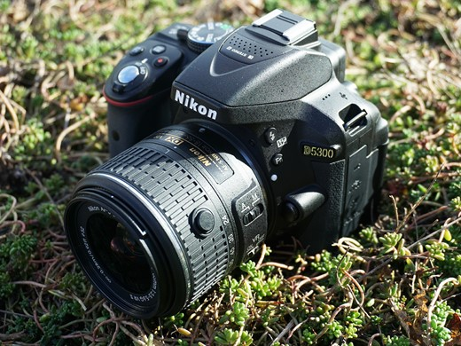
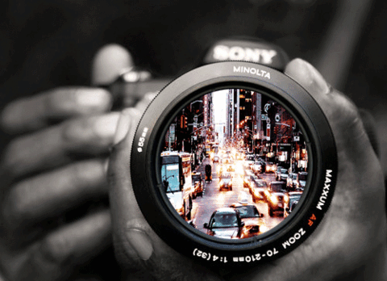

Nikon D5300
Nikon D5300 dysponuje 39-polowym autofokusem dla precyzji ostrości.Nikon D5300 posiada najnowocześniejszy, ruchomy wyświetlacz LCD, niedotykowy, o przekątnej 3,2 cala, o rozdzielczości 1,04 mln punktów. Jest tutaj także wizjer optyczny z pokryciem kadru do 95 proc.

Obiektyw minolta 55mm
Uniwersalny zakres zoomu 18–55 mm pozwala rejestrować różne obiekty, od krajobrazów, poprzez portrety, aż po dynamiczne wydarzenia. Lekka konstrukcja sprawia, że obiektyw jest doskonały do użytku codziennego.